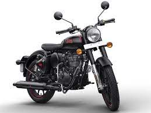
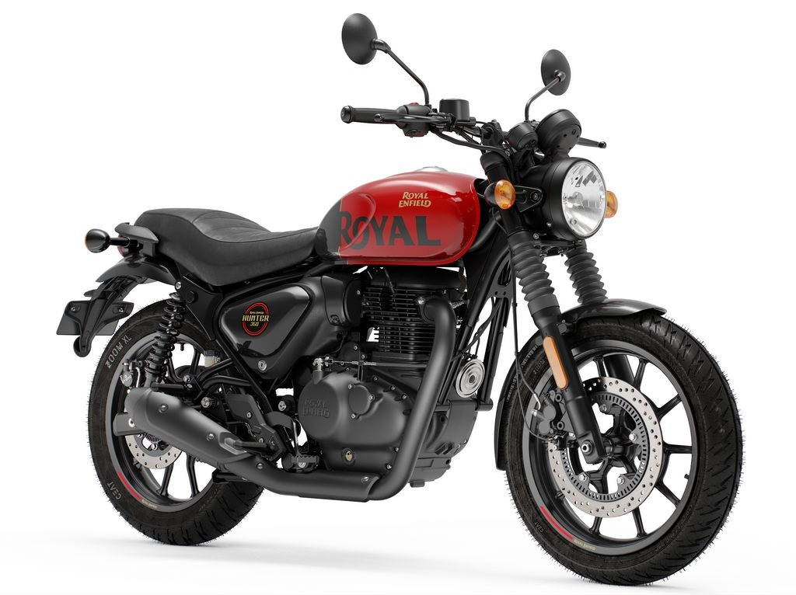
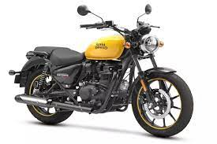
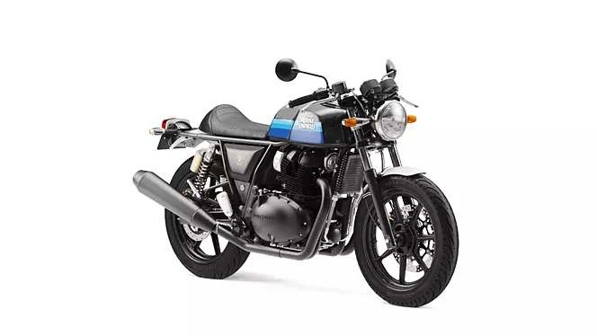

ROYAL ENFIELD
Classic 350
The first generation Classic 350 and the Classic 500 feature the new unit construction engine in their 350cc and 500cc variants respectively. However the Classic 350 uses a carburettor for fuel delivery The Classic 350 has an ammeter while the Classic 500 has a low fuel indicator light and engine check light instead of the ammeter. The ammeter on the Classic 350 is more of a vestigial remain as the modern Classic 350 has no practical use for it.
Hunter 350
The Royal Enfield Hunter 350[2][3][4] is a roadster motorcycle launched by Royal Enfield (India) in August 2022[5][6] in India. It is powered by 349cc BS6 engine that produces 20.2 bhp and 27 Nm of torque. The Hunter 350[7] is the most affordable motorcycle under the new J-platform, and the second least expensive bike after Royal Enfield Bullet 350. The motorcycle features a retro-style single-piece seat, a classic round headlamp, a flat handlebar and a sculpted fuel tank. Within a month of launch Hunter 350 becomes the second highest selling Royal Enfield motorcycle.[8]
Meteor 350
Royal Enfield developed the Meteor codenamed JD1.[1] The 349cc long-stroke single-cylinder engine is now air and oil-cooled and the traditional pushrods were replaced by an overhead cam. The engine produces 20 horsepower at 6,100rpm and 27Nm of torque at 4,000rpm and is paired to a five-speed constant mesh transmission. The bike has a power-to-weight ratio of 105.75 hp/tonne. The engine design also includes a balancer shaft to repress the vibrations.[2]The Royal Enfield Meteor 350 has a fuel consumption of around 35 km/l.
 Continental GT 650
The Continental GT 650 alongside the Interceptor 650 was introduced in November 2017.[3] The café racer has either a standard dual-seat or an optional solo seat with a seat hump. The fuel tank is more angular than the roadster's. Clip-on handlebars and rear-set pegs allow a sportier riding position.[4]